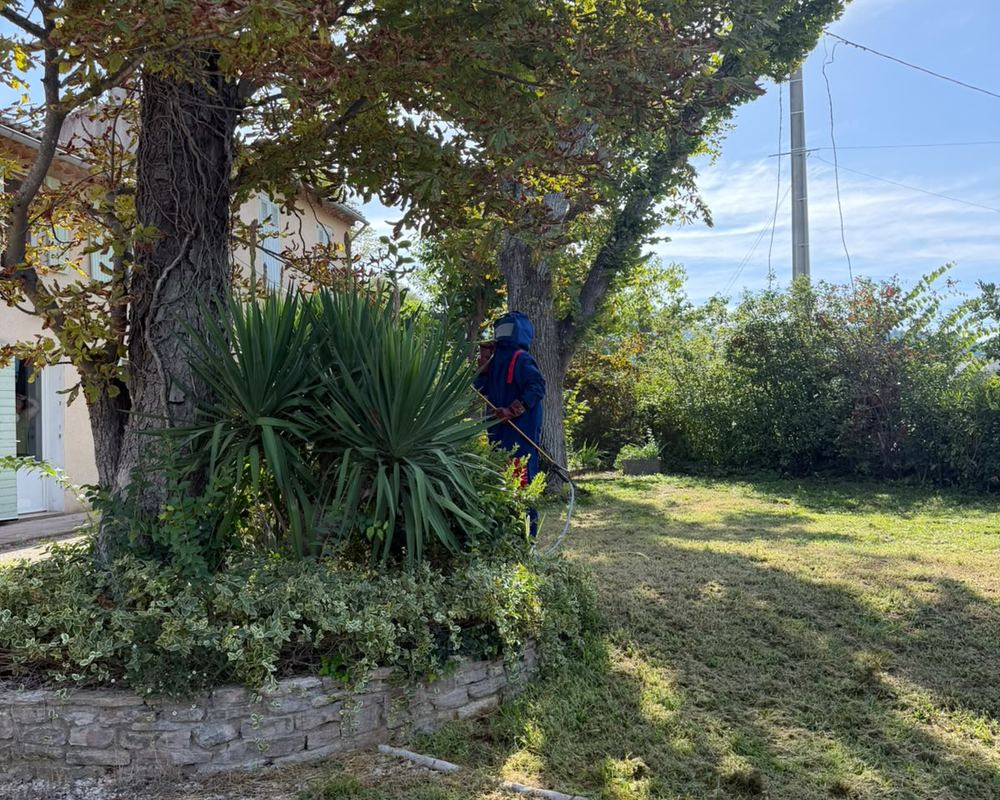

Dératisation et désinsectisation à Gémenos
Village au pied de la Sainte-Baume, quartiers résidentiels et grande zone d'activités : à Gémenos, on intervient autant chez les particuliers que dans les entreprises. Rats, souris, blattes (cafards), fourmis, guêpes et frelons : ce sont les nuisibles que l'on traite le plus souvent.
Mis à jour le · par Mathias Sergent, technicien certifié
- Technicien certifié Certibiocide
- Particuliers et professionnels
- Tout le département 13

Les nuisibles à Gémenos
Gémenos réunit un vieux village, des maisons avec jardin au pied du massif de la Sainte-Baume et l'une des grandes zones d'activités de l'est marseillais.
Chez les particuliers, ce sont surtout les nids de frelons et de guêpes dans les arbres et les haies, et le moustique tigre en été. Dans les entrepôts, commerces et restaurants de la zone d'activités, la priorité est la dératisation et la lutte contre les blattes.
Plusieurs exemples de notre carnet de tournée se passent à Gémenos.
Les interventions les plus fréquentes à Gémenos
| Nuisible | Où on le rencontre | Notre page |
|---|---|---|
| Rats et souris | Entrepôts, quais, locaux poubelles | Dératisation · Souris |
| Blattes (cafards) | Cuisines d'entreprise et restaurants de la zone d'activités | Cafards et blattes |
| Fourmis | Jardins et terrasses des quartiers résidentiels | Fourmis |
| Guêpes | Toitures, volets roulants, abris de jardin | Guêpes |
| Frelons asiatiques | Grands arbres et haies des jardins | Frelons asiatiques |
| Moustique tigre | Jardins et terrasses, de mai à novembre | Moustique tigre |
Où on intervient autour de Gémenos
- Gémenos
- Aubagne
- Cuges-les-Pins
- Roquevaire
- Auriol
- La Penne-sur-Huveaune
- Belcodène
- Peypin
Comment se passe une intervention
Appelez-nous ou décrivez votre problème via le formulaire de contact. Le rendez-vous est fixé à l'appel, du lundi au samedi de 8 h à 19 h.
Le technicien commence par un diagnostic : identification du nuisible, des zones touchées et des points d'entrée. Le traitement et le prix sont ensuite définis selon ce constat.
Quels nuisibles rencontre-t-on à Gémenos ?
| Signe | Ce que ça indique | Que faire |
|---|---|---|
| Frelons et guêpes | Collines, jardins et bords du Fauge | Destruction des nids |
| Rats | Zone d'activités, entrepôts, berges | Postes sécurisés et obturation |
| Moustique tigre | Jardins et terrasses en été | Suppression des gîtes larvaires |
| Chenilles processionnaires | Pins des lotissements | Retrait des nids en hiver |
Par exemple, dans la zone d'activités, les rongeurs profitent des quais de livraison et des bennes. En pratique, les maisons au pied de la Sainte-Baume voient surtout des frelons et des guêpes l'été. Concrètement, nous venons depuis Trets, tout proche. Exemple courant : un nid de frelons asiatiques découvert à l'automne dans un chêne du jardin.
Gémenos : vos questions
Intervenez-vous dans la zone d'activités de Gémenos ?
Oui : entrepôts, commerces, restaurants et bureaux, avec rapport de passage et contrats de suivi sur devis.
Les nids de frelons sont-ils fréquents à Gémenos ?
Oui, les jardins arborés au pied du massif s'y prêtent. Un nid repéré tôt est plus simple à traiter.
Intervenez-vous aussi à Aubagne ?
Oui, voir notre page Aubagne : nous couvrons toute la vallée de l'Huveaune.
Intervenez-vous dans la zone d'activités de Gémenos ?
Oui, pour les entreprises comme pour les particuliers : entrepôts, bureaux, commerces et ateliers.
Intervenez-vous aussi autour de Gémenos ?
Oui, à Aubagne, Cuges-les-Pins, Roquevaire et dans la vallée de l'Huveaune.